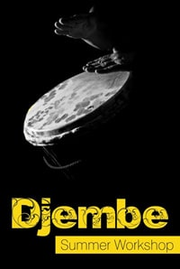
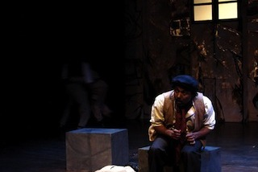
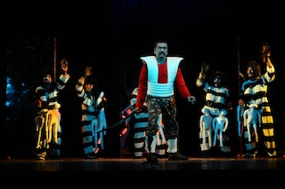
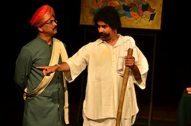
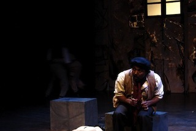
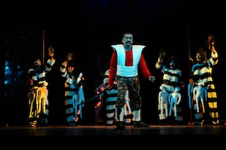
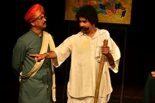

jembe ashok

This workshop is to enable everyone to learn to play the Jembe - an african drum and use that as a medium to find the joy of playing together. This will be a 16 session workshop for 2 hours each, held on the weekends in May and June 2014. No prior musical background is necessary. And if you don't have a djembe, they would be provided for the workshop duration.
Date: May - June 2014 (8 Weekends - starting from 10th May)
Time: 0930 to 1130 on Saturday & Sunday
Participants: 15 max.
Cost: Rs. 8000 for the entire course
Location: Jain College, Behind Big Bazaar, Jayanagar 9th Block, Bangalore - 560 069 Bangalore [Get Directions]
Contact: Ashok - 9980 344 788 or Amit - 9739 268 197
Email: ashok@utsmaya.com
Sign up: Click & go to Book My Show and register.
Weekly Session Plan
Contact Kedar (9448 088 573) or KK (9901 518 162) at Octavium
My musical journey began with the tabla and found fulfilment in the djembe - an African drum. I am a true fusion musician, having played with Carnatic, Hindustani and even dabbled with electronica. In a fusion of the arts, I have even played for artist, BKS Varma who painted during my djembe recital. The Attakalari Centre for Movement Arts have used my skills in the arena of dance. I have also composed music for several plays including an India – Hong Kong production called 'Yours Most Obediently'. I am now working with my dream project – Shoonya.
The Sanskrit word Shoonya translates to “Nothingness” - the Indian concept of how everything comes into being from nothingness. This ancient Indian concept could not be truer for music. Shoonya the band takes inspiration from their “nothingness” to create some of the most eclectic and genre defying music.
The language of music has seen many diverse and successful experiments to blend the various styles of world music. Shoonya seeks to create their own dialect, culled from influences that range from folk music, Carnatic and Hindustani music to West African rhythms. The varied set of artistes from Shoonya aim to break cultural, social and ethnical frontiers to create a community experience for a diverse audience.
Shoonya is a collaborative platform for people from various artistic backgrounds to introduce their musical ideas into the mix, and have at some point worked with art forms ranging from theatre and dance to electronic music. Beyond their genre defying experiments in contemporary music, Shoonya attempt to address a most basic and necessary function – conveying to the listener the pure joy of music.
Read more at www.shoonya.co.in
My journey in theatre began with joining a theatre company for 4 years, where I discovered the actor within. My devotion to this art has led me to play various roles from Jesus Christ to Karna of Mahabharatha. To hone my theatre skills further, I spent a year with Khalid Tyabji's theatre ensemble in Hampi. Off the stage, I have tried a hand at everything from set design to direction. My acting has led me to be part of many prestigious theatre festivals and being included three times in the National Theatre Festivals organized by Sangeet Natak Academy. I have played lead roles in various Kannada Theater for more than 15 production over the last decade.

 





My first lead role in a Kannada movie is for Prakruti - a feature film based on a U R Ananthmurthy's short story. I play the lead role of Sankappiya. It will releasing in 2014.
Prakruti has won the
I am looking forward to playing more roles in films in the coming years. My focus is on parallel / art movies and I am eager to experiment more within this medium.
I conduct theatre workshop for new and upcoming actors.
I have extensively used theatre in the field of education and have presented a much appreciated paper on Social Development through theatre. My varied experiments in using theatre as a method of learning got him invited to Mahtomedi Public School, Minneapolis, where I designed and executed a theatre workshop on the theme 'Beyond the Borders' in 2003-4. Theatre and music were used to assist young people address social, cultural and personal concerns. I presented a paper on Creative Use of Drama and Music in Educations. The Ministry of Human Resource Development awarded me a scolarship for this work.
I have also used theatre as a medium of commuincation in the education and corporate sector, having done stress management, team building workshops for companies like Motorola, Msource, educational institutes like Christ University, IIMB, Azim Premji University & for social organisations like Quest, Madhyam, Eklavaya, Natya Chetna, BITA (Bangladesh) etc.
I have co-developed (with Amit) this unique workshop experience to enable anyone to flourish. We believe each of us have a seed in us that if provided the right nourishment and support can flower in its own unique way. We don’t need to follow any traditional path or fit ourselves into a framework of how everyone works. We use three lenses - three different art forms of Roleplay (Theatre), Storytelling and Djembe (Music) - to get started on this journey. Each art form is used in a session as the chosen medium for expression, exploration and discovery.
Find out more at at Utsmaya.com
{kind=link}
{kind=link}
{kind=link}
{kind=link}